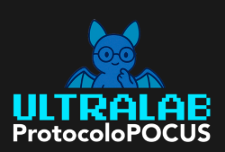
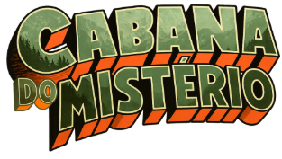
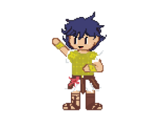
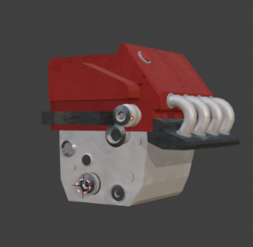
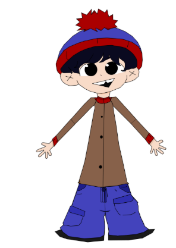

Projetos e Modelagens

TCC: Ultralab
Desenvolvimento e estruturação do projeto de conclusão de curso com foco prático em desenvolvimento de software.

Escape Room: Cabana
Jogo em ambiente 3D baseado em enigmas e mecânicas de exploração lógica criadas em grupo (2025).

2D: Radiant Hero
Projeto acadêmico de jogo bidimensional desenvolvido em equipe, unindo game design e programação de jogabilidade (2024).

Modelagem: Motor
Estudo técnico de modelagem 3D de precisão utilizando o software Blender para objetos mecânicos complexos.

Ilustração 2D
Criação e arte vetorial conceitual desenvolvida para estudo de identidade visual e design gráfico básico.
×

Título do Projeto
Descrição detalhada aqui...